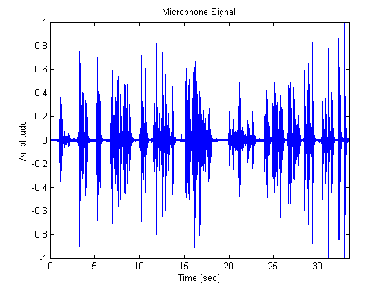

This demonstration illustrates the application of adaptive filters to acoustic echo cancellation (AEC). Acoustic echo cancellation is important for audio teleconferencing when simultaneous communication (or full-duplex transmission) of speech is necessary. In acoustic echo cancellation, a measured microphone signal d(n) contains two signals: - the near-end speech signal v(n) - the far-end echoed speech signal dhat(n) The goal is to remove the far-end echoed speech signal from the microphone signal so that only the near-end speech signal is transmitted. This demo has some sound clips, so you might want to adjust your computer's volume now.
Author(s): Scott C. Douglas
First, we describe the acoustics of the loudspeaker-to-microphone signal path where the speakerphone is located. We can use a long finite impulse response filter to describe these characteristics. The following sequence of commands generates a random impulse response that is not unlike what a conference room would exhibit assuming a system sampling rate of fs = 8000 Hz.
M = 4001; fs = 8000; [B,A] = cheby2(4,20,[0.1 0.7]); Hd = dfilt.df2t([zeros(1,6) B],A); hFVT = fvtool(Hd); % Analyze the filter set(hFVT, 'Color', [1 1 1])
H = filter(Hd,log(0.99*rand(1,M)+0.01).*sign(randn(1,M)).*exp(-0.002*(1:M))); H = H/norm(H)*4; % Room Impulse Response plot(0:1/fs:0.5,H); xlabel('Time [sec]'); ylabel('Amplitude'); title('Room Impulse Response'); set(gcf, 'Color', [1 1 1])
The teleconferencing system's user is typically located near the system's microphone. Here is what a male speech sounds like at the microphone.
load nearspeech n = 1:length(v); t = n/fs; plot(t,v); axis([0 33.5 -1 1]); xlabel('Time [sec]'); ylabel('Amplitude'); title('Near-End Speech Signal'); set(gcf, 'Color', [1 1 1]) sound(v,fs); pause(length(v)/fs);
Now we describe the path of the far-end speech signal. A male voice travels out the loudspeaker, bounces around in the room, and then is picked up by the system's microphone. Let's listen to what his speech sounds like if it is picked up at the microphone without the near-end speech present.
load farspeech x = x(1:length(x)); dhat = filter(H,1,x); plot(t,dhat); axis([0 33.5 -1 1]); xlabel('Time [sec]'); ylabel('Amplitude'); title('Far-End Echoed Speech Signal'); set(gcf, 'Color', [1 1 1]) sound(dhat,fs); pause(length(dhat)/fs);
The signal at the microphone contains both the near-end speech and the far-end speech that has been echoed throughout the room. The goal of the acoustic echo canceller is to cancel out the far-end speech, such that only the near-end speech is transmitted back to the far-end listener.
d = dhat + v+0.001*randn(length(v),1); plot(t,d); axis([0 33.5 -1 1]); xlabel('Time [sec]'); ylabel('Amplitude'); title('Microphone Signal'); set(gcf, 'Color', [1 1 1]) sound(d,fs); pause(length(d)/fs);
The algorithm that we will use in this demonstration is the Frequency-Domain Adaptive Filter (FDAF). This algorithm is very useful when the impulse response of the system to be identified is long. The FDAF uses a fast convolution technique to compute the output signal and filter updates. This computation executes quickly in MATLAB. It also has improved convergence performance through frequency-bin step size normalization. We'll pick some initial parameters for the filter and see how well the far-end speech is cancelled in the error signal.
mu = 0.025; W0 = zeros(1,2048); del = 0.01; lam = 0.98; x = x(1:length(W0)*floor(length(x)/length(W0))); d = d(1:length(W0)*floor(length(d)/length(W0))); % Construct the Frequency-Domain Adaptive Filter hFDAF = adaptfilt.fdaf(2048,mu,1,del,lam); [y,e] = filter(hFDAF,x,d); n = 1:length(e); t = n/fs; pos = get(gcf,'Position'); set(gcf,'Position',[pos(1), pos(2)-100,pos(3),(pos(4)+85)]) subplot(3,1,1); plot(t,v(n),'g'); axis([0 33.5 -1 1]); ylabel('Amplitude'); title('Near-End Speech Signal'); subplot(3,1,2); plot(t,d(n),'b'); axis([0 33.5 -1 1]); ylabel('Amplitude'); title('Microphone Signal'); subplot(3,1,3); plot(t,e(n),'r'); axis([0 33.5 -1 1]); xlabel('Time [sec]'); ylabel('Amplitude'); title('Output of Acoustic Echo Canceller'); set(gcf, 'Color', [1 1 1]) sound(e/max(abs(e)),fs); pause(length(e)/fs);
Since we have access to both the near-end and far-end speech signals, we can compute the echo return loss enhancement (ERLE), which is a smoothed measure of the amount (in dB) that the echo has been attenuated. From the plot, we see that we have achieved about a 30 dB ERLE at the end of the convergence period.
Hd2 = dfilt.dffir(ones(1,1000)); setfilter(hFVT,Hd2);
erle = filter(Hd2,(e-v(1:length(e))).^2)./(filter(Hd2,dhat(1:length(e)).^2)); erledB = -10*log10(erle); plot(t,erledB); axis([0 33.5 0 40]); xlabel('Time [sec]'); ylabel('ERLE [dB]'); title('Echo Return Loss Enhancement'); set(gcf, 'Color', [1 1 1])
Warning: Divide by zero.
To get faster convergence, we can try using a larger step size value. However, this increase causes another effect, that is, the adaptive filter is "mis-adjusted" while the near-end speaker is talking. Listen to what happens when we choose a step size that is 60\% larger than before
newmu = 0.04; set(hFDAF,'StepSize',newmu); [y,e2] = filter(hFDAF,x,d); pos = get(gcf,'Position'); set(gcf,'Position',[pos(1), pos(2)-100,pos(3),(pos(4)+85)]) subplot(3,1,1); plot(t,v(n),'g'); axis([0 33.5 -1 1]); ylabel('Amplitude'); title('Near-End Speech Signal'); subplot(3,1,2); plot(t,e(n),'r'); axis([0 33.5 -1 1]); ylabel('Amplitude'); title('Output of Acoustic Echo Canceller, \mu = 0.025'); subplot(3,1,3); plot(t,e2(n),'r'); axis([0 33.5 -1 1]); xlabel('Time [sec]'); ylabel('Amplitude'); title('Output of Acoustic Echo Canceller, \mu = 0.04'); set(gcf, 'Color', [1 1 1]) sound(e2/max(abs(e2)),fs); pause(length(e2)/fs);
With a larger step size, the ERLE performance is not as good due to the misadjustment introduced by the near-end speech. To deal with this performance difficulty, acoustic echo cancellers include a detection scheme to tell when near-end speech is present and lower the step size value over these periods. Without such detection schemes, the performance of the system with the larger step size is not as good as the former, as can be seen from the ERLE plots.
close; erle2 = filter(Hd2,(e2-v(1:length(e2))).^2)./(filter(Hd2,dhat(1:length(e2)).^2)); erle2dB = -10*log10(erle2); plot(t,[erledB erle2dB]); axis([0 33.5 0 40]); xlabel('Time [sec]'); ylabel('ERLE [dB]'); title('Echo Return Loss Enhancements'); legend('FDAF, \mu = 0.025','FDAF, \mu = 0.04'); set(gcf, 'Color', [1 1 1])
Warning: Divide by zero.